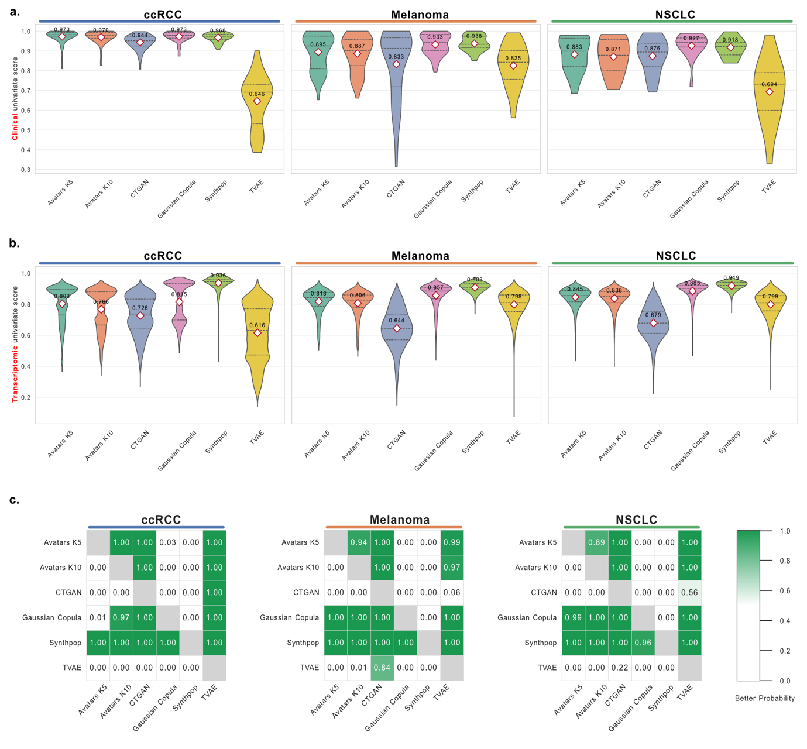
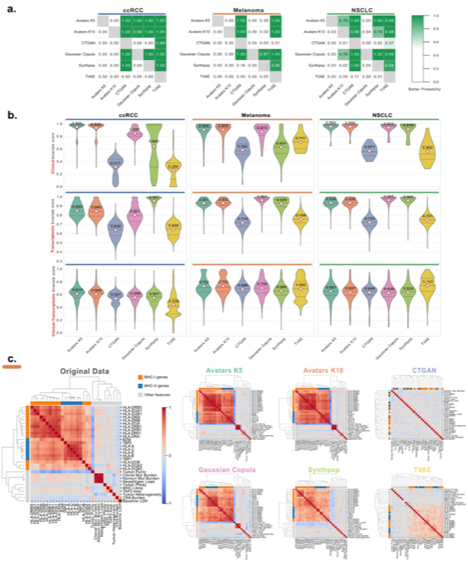

Broad Utility Evaluation¶
Broad utility assessment evaluates the ability of synthetic data generation methods to preserve the general statistical properties of the original dataset. In SynOmicBench, this is quantified through univariate and bivariate similarity metrics, ensuring that both individual feature distributions and inter-feature dependencies are accurately captured.
Univariate Similarity¶
Univariate similarity measures how well the distribution of each feature in the synthetic data matches the corresponding feature in the real dataset. This is crucial for ensuring that basic statistical summaries (mean, variance, range) and the overall shape of the data are maintained.
Metrics¶
We utilize three primary metrics for univariate assessment:
- Kolmogorov-Smirnov (KS) Statistic: A non-parametric test that quantifies the maximum distance between the empirical cumulative distribution functions (ECDF) of the real and synthetic data.
- Jensen-Shannon (JS) Divergence: A symmetric measure of the similarity between two probability distributions, based on the Kullback–Leibler divergence. It provides a smoother and more stable evaluation of distributional overlap.
- Missing Value Similarity: Compares the proportion and pattern of missing data between original and synthetic datasets, ensuring that the synthetic model correctly captures the "missingness" structure.
Benchmark Results¶
Our evaluation across diverse cohorts (ccRCC, Melanoma, NSCLC) highlights the strengths of different synthesizers:
- Synthpop: Consistently achieves the best performance in univariate similarity across both clinical and transcriptomic features. Its tree-based approach effectively captures local data density.
- Gaussian Copula: Ranks second, demonstrating robust ability to model marginal distributions, especially for numerical transcriptomic data.
- Deep Learning (TVAE, CTGAN): Perform well but are slightly more prone to mode collapse or over-smoothing compared to statistical methods.

Figure 2: Distribution of univariate similarity metrics (KS Statistic and JS Divergence) across evaluated synthesizers.Bivariate Similarity¶
Bivariate similarity evaluates the preservation of relationships between pairs of features. In multi-omics data, capturing these correlations is essential for maintaining biological validity and downstream utility.
Correlation Analysis¶
We compute the Pearson correlation matrix for both original and synthetic datasets. The similarity is then quantified by: - Correlation Difference: The absolute difference between the real and synthetic correlation matrices. - Log-cluster Similarity: Assessing how well the hierarchical clustering of features in the original data is preserved in the synthetic version.
Key Findings¶
The preservation of bivariate structure often presents a trade-off with univariate fidelity:
- Avatars (K=5, K=10): Lead in bivariate similarity, particularly in preserving the complex correlation structure of transcriptomic features. By performing synthesis in a transformed latent space, Avatars effectively maintain global inter-feature dependencies.
- Gaussian Copula: Also performs strongly here, as its primary objective is to model the dependency structure (the copula) between variables.
- Synthpop: While excellent at univariate matching, it can sometimes struggle to capture the full complexity of high-dimensional correlations in omics data compared to the latent-space methods.

Figure 3: Comparison of correlation preservation and bivariate similarity across different cohorts and methods.The Fidelity-Correlation Trade-off
Synthesizers that excel at matching individual feature distributions (high univariate fidelity) do not always preserve the global correlation structure. Selecting the optimal method requires balancing these two dimensions based on the specific requirements of the downstream analysis.
Code Example: Computing Similarity¶
SynOmicBench provides dedicated classes to compute these metrics. Below is an example of how to use UnivariateSimilarity and PairwiseSimilarity.
import pandas as pd
from SynOmics.metrics.fidelity.UnivariateSimilarity import UnivariateSimilarity
from SynOmics.metrics.fidelity.PairwiseSimilarity import PairwiseSimilarity
# Load original and synthetic data
real_df = pd.read_csv("data/real_ccrcc.csv")
syn_df = pd.read_csv("data/synthetic_ccrcc.csv")
# 1. Compute Univariate Similarity (KS and JS)
uni_sim = UnivariateSimilarity()
ks_results = uni_sim.compute_ks_statistic(real_df, syn_df)
js_results = uni_sim.compute_js_divergence(real_df, syn_df)
print(f"Mean KS Statistic: {ks_results['ks_stat'].mean():.4f}")
print(f"Mean JS Divergence: {js_results['js_div'].mean():.4f}")
# 2. Compute Bivariate Similarity (Correlation Matrix Difference)
pair_sim = PairwiseSimilarity()
corr_diff = pair_sim.compute_correlation_similarity(real_df, syn_df)
print(f"Mean Correlation Absolute Error: {corr_diff:.4f}")
# Visualize the correlation matrix difference
pair_sim.plot_correlation_comparison(real_df, syn_df, save_path="plots/corr_diff.png")
For a deeper dive into these metrics across all evaluated cohorts, please see our Broad Utility Notebooks.